Certified data analyst in Lagos, Nigeria
See my work belowGet in touchSkills and credentials
What I work with
Credentials
- Google Data Analytics Professional Certificate, Coursera, 9 courses. Verify it here.
- Ultimate Microsoft Office 365 Essentials Bundle, Udemy.
Projects I’ve worked on
Two projects that show how I clean data, find the story in it, and say what to do next.
Project oneThis is a practice analysis. I took a Netflix catalogue file of 8,807 titles and worked through it end to end in Excel, from cleaning to an interactive dashboard, to show how I handle a business question.
Interactive dashboard
Swipe to see how every number and chart responds to the filters.
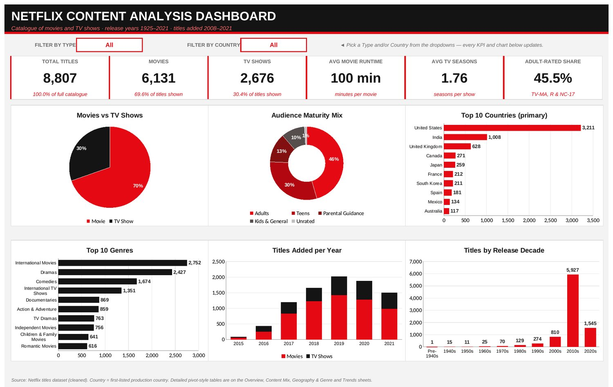
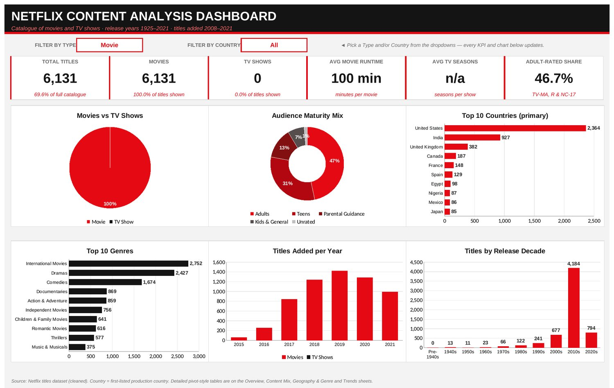
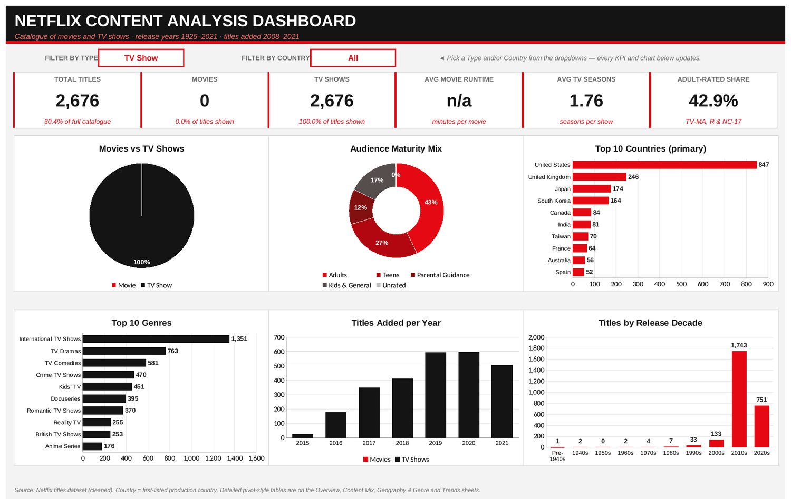
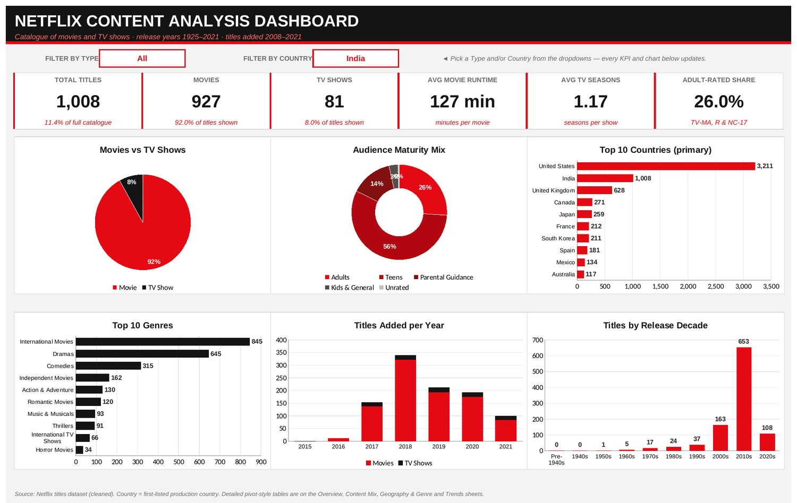
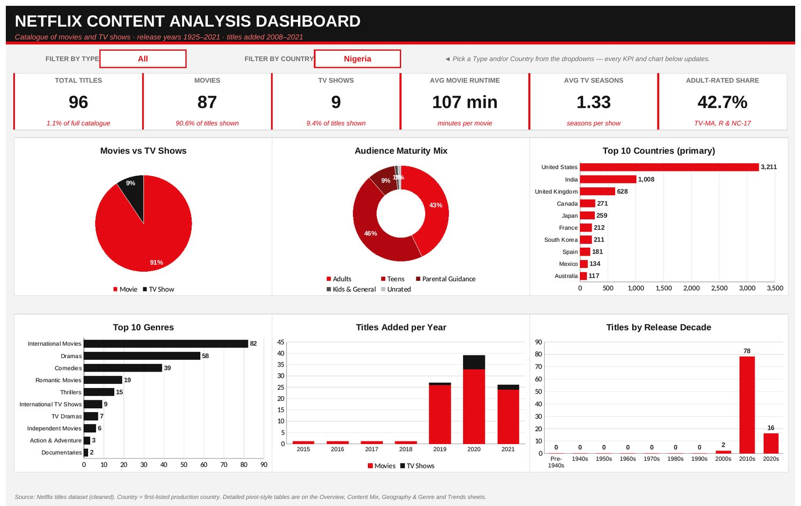
Reports and data
Swipe through the written analysis tabs and the cleaned data behind them.
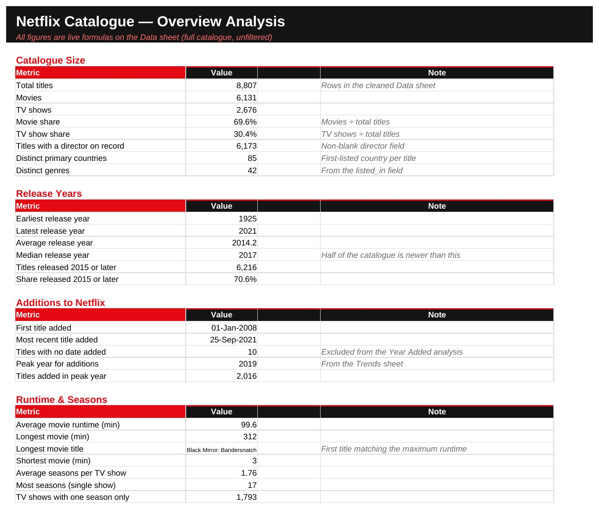
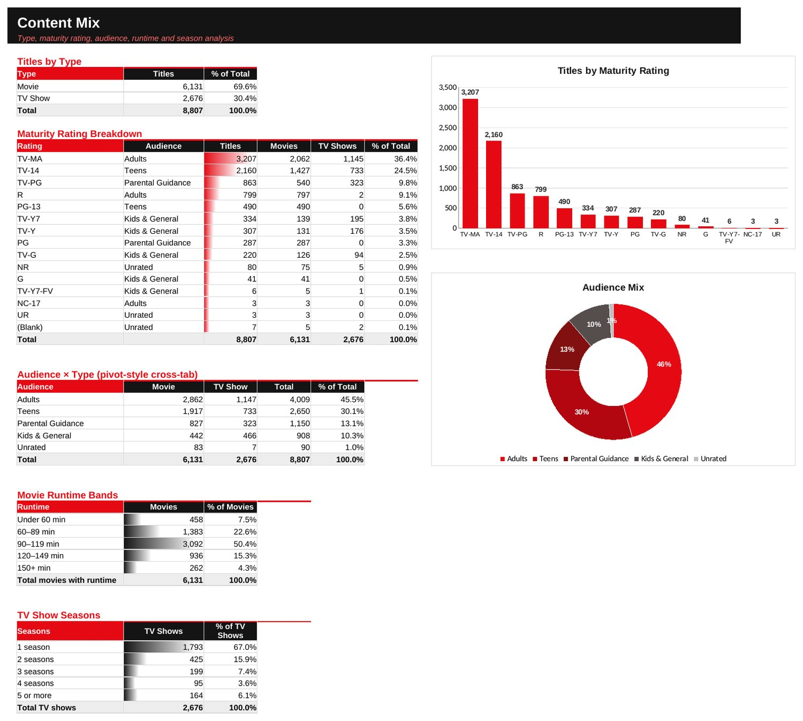
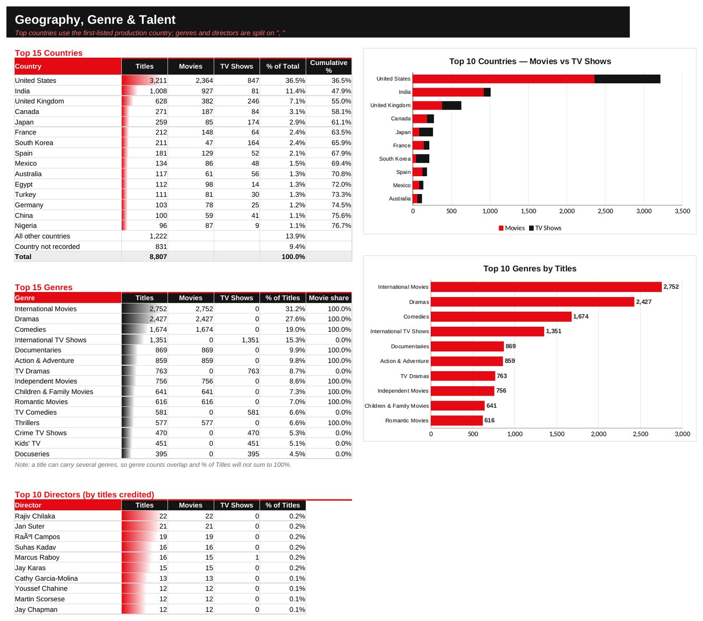
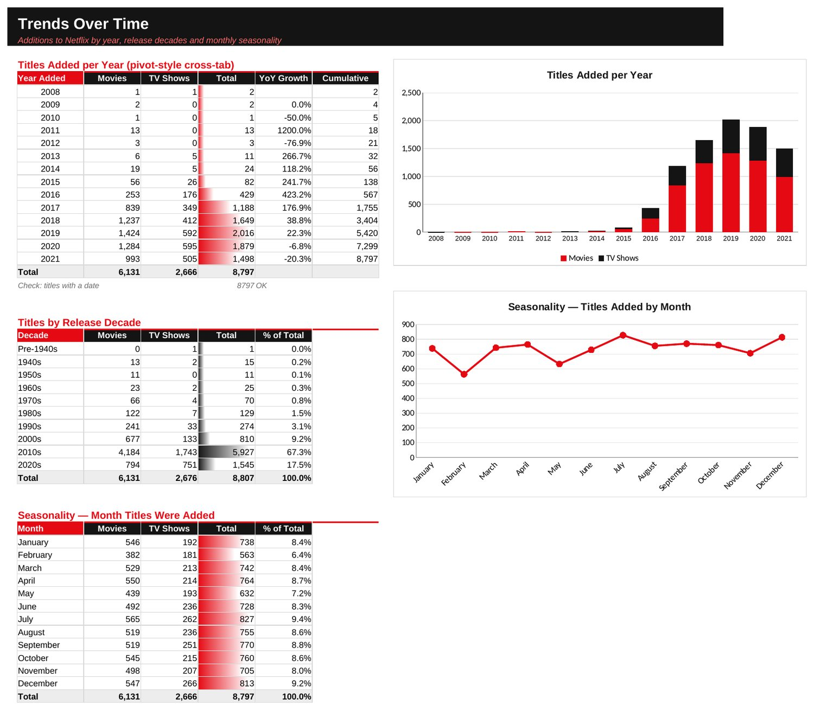
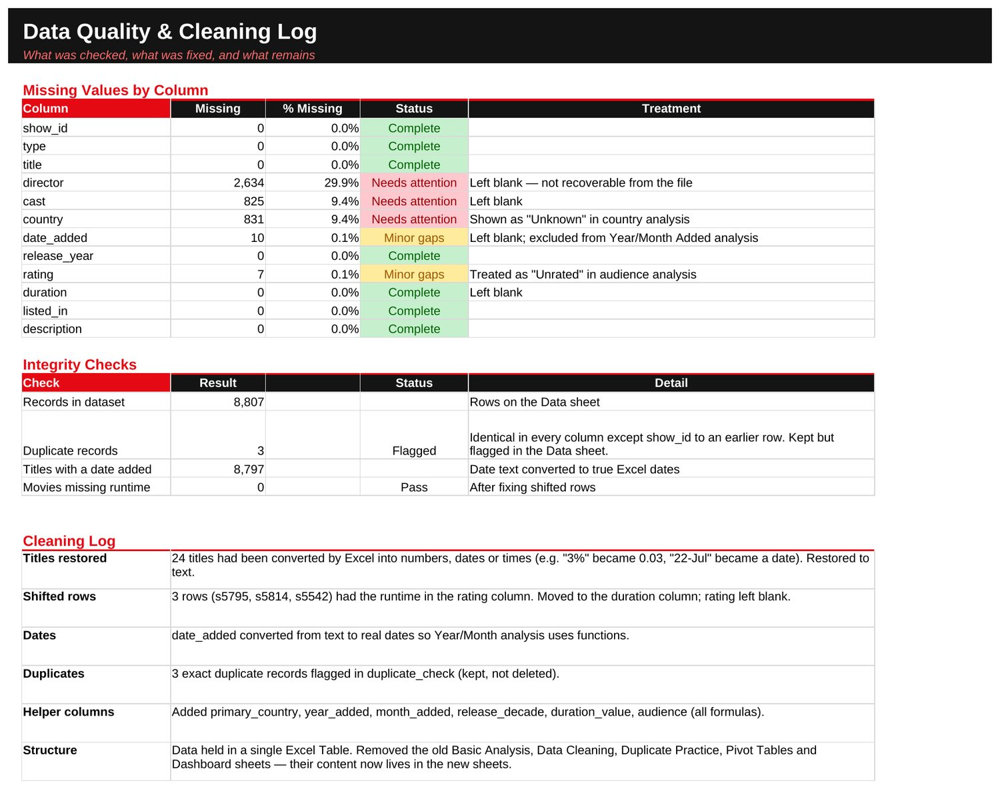
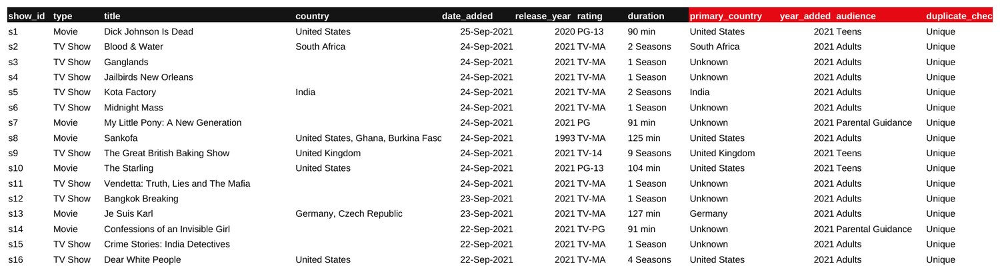
What 8,807 Netflix titles reveal
Findings
- Movies are 69.6% of titles, and the United States and India supply 47.9% between them.
- Adults are the core audience at 45.5% of titles. Kids and general content is only 10.3%.
- Additions peaked at 2,016 titles in 2019, and 67% of TV shows run a single season.
What I would recommend
- Earn more from families. Kids and general titles are only 10.3% of the catalogue. A stronger family offer could bring in new paying households, and viewing data would confirm the size of the gain.
- Match format to market. India leans to movies (92%) and South Korea to TV shows (78%), so local releases should follow each market’s habit.
- Keep viewers, not just add titles. Additions flattened after 2019, so renewing proven shows may pay back more than adding new ones.
How I cleaned the data
| Problem | Fix |
|---|---|
| 24 titles that Excel turned into numbers or dates (“3%” became 0.03) | Restored as text |
| 3 rows with runtime in the rating column | Moved to the duration column |
| Dates stored as text | Converted to real dates |
| 3 exact duplicates | Flagged and kept, not deleted |
| Gaps: director 29.9%, country 9.4%, cast 9.4% | Left blank or labelled Unknown, and excluded where needed |
2021 ends on 25 September, so its dip from 2019 is partly a short year. Some names in the source file arrived with garbled characters (Raúl appears as Raúl) and still need a proper fix.
Open the Excel file to use the dashboard, where Type and Country dropdowns update every number and chart at once, and to see every formula behind the analysis.
Download the Excel workbook (2.4 MB)This is real work I did for Lagos State University of Science and Technology.
Clearing a two year records backlog
Two years of student counselling and session attendance records had piled up across at least 10 departments and 500+ students. Duplicates and scattered files made a single record hard to find.
Turn the backlog into one clean record that staff could search quickly and trust.
I removed the duplicates and built an Excel workbook that organises records by session date. One student can attend many sessions, so searching by name alone would miss visits. I also digitised the workshop attendance lists.
Records are now found with a quick search instead of a manual hunt. The duplicates are gone and errors are fewer.
I used the same approach on event data. For the career fair (500 students) and an entrepreneurship bootcamp, I cleaned the attendance lists and broke students and exhibitors into percentage categories for reporting.
- Exhibitor categories show which industries turn up most. Those are the natural targets for paid sponsor packages at the next fair.
- Student category percentages show who attends, which helps the school pitch exhibitors on the audience they would reach.
Let’s talk
I am looking for a Data Analyst role. If you are hiring, or just want to see how I worked through these projects, send me a message.
mohammedhakeem5842@gmail.comBased in Lagos, Nigeria